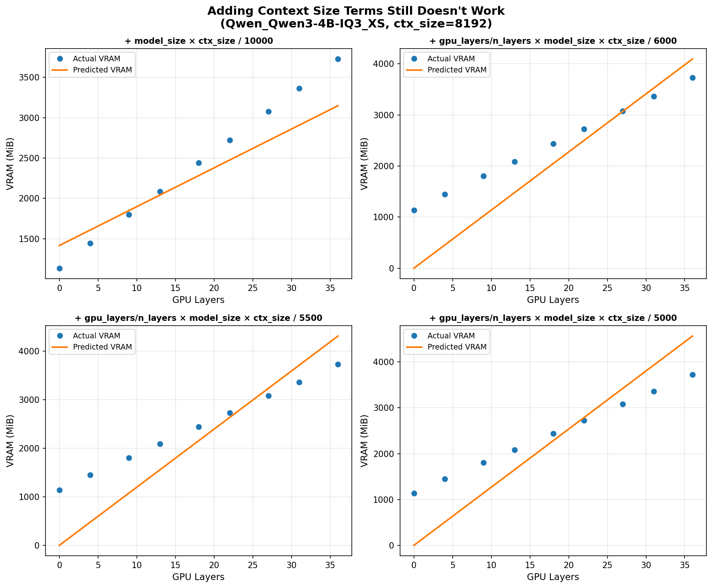
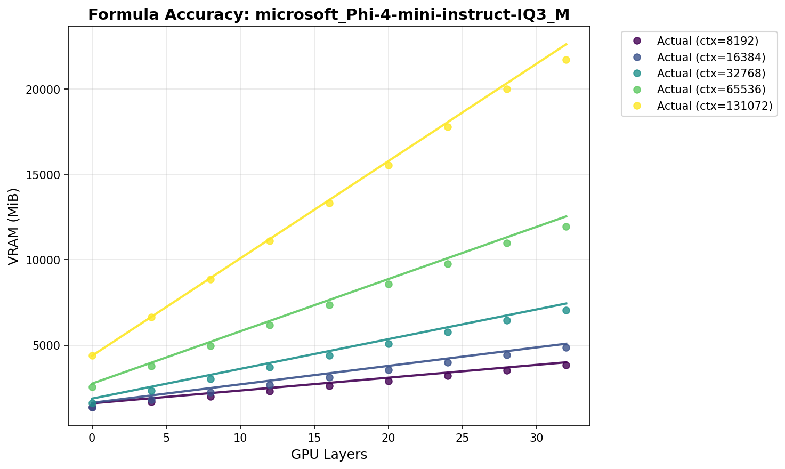

A formula that predicts GGUF VRAM usage from GPU layers and context length
In llama.cpp, there are two main parameters that you typically have to set before loading a model:
- The number of GPU layers:
gpu-layers - The context length:
ctx-size
If the model is too large for your GPU and you set either value too high, llama.cpp will throw an out-of-memory error while loading the model and crash.
Initial hypothesis
Intuitively, the VRAM usage of a model should be close to its size on disk when fully offloaded to the GPU. I wondered if good prediction accuracy could be obtained through something like:
VRAM = gpu_layers / n_layers * size_on_disk + (term proportional to ctx_size)
Gathering data
To test this, I downloaded a total of 60 different quants for models across a wide range of families, namely:
- c4ai-command-r-v01:
Q3_K_L/Q8_0 - CohereForAI_c4ai-command-a-03-2025:
IQ2_XS - DeepSeek-R1-Distill-Llama-8B:
IQ3_M/Q5_K_L - DeepSeek-R1-Distill-Qwen-14B:
IQ2_M/Q2_K_L - DeepSeek-R1-Distill-Qwen-1.5B:
Q4_1/Q4_K_M - DeepSeek-R1-Distill-Qwen-32B:
Q3_K_M/Q4_K_M - DeepSeek-R1-Distill-Qwen-7B:
IQ3_XS/Q6_K - google_gemma-3-12b-it:
IQ3_XS/IQ3_XXS - google_gemma-3-1b-it:
IQ3_XXS/Q3_K_XL - google_gemma-3-27b-it:
IQ3_M/Q5_K_L - google_gemma-3-4b-it:
IQ3_M/Q5_K_M - ibm-granite_granite-3.3-2b-instruct:
Q4_K_S/Q8_0 - ibm-granite_granite-3.3-8b-instruct:
IQ3_M/Q5_K_L - Llama-3.2-1B-Instruct:
Q3_K_L/Q6_K_L - Llama-3.2-3B-Instruct:
Q5_K_M/Q6_K_L - Meta-Llama-3.1-70B-Instruct:
Q3_K_S - meta-llama_Llama-4-Scout-17B-16E-Instruct:
IQ3_M - microsoft_Phi-4-mini-instruct:
IQ3_M/IQ3_XXS - Mistral-7B-Instruct-v0.3:
Q3_K_S/Q5_K_S - mistralai_Mistral-Small-3.1-24B-Instruct-2503:
Q2_K/Q3_K_S - Mistral-Nemo-Instruct-2407:
IQ3_XS/Q5_K_L - Mixtral-8x22B-v0.1:
IQ3_M - Phi-3-mini-4k-instruct:
IQ1_S/IQ2_S - phi-4:
IQ4_NL/Q2_K_L - Qwen_Qwen3-0.6B:
Q3_K_S/Q3_K_XL - Qwen_Qwen3-14B:
Q5_K_L/Q5_K_M - Qwen_Qwen3-1.7B:
Q4_K_L/Q6_K - Qwen_Qwen3-30B-A3B:
IQ2_XS/Q6_K_L - Qwen_Qwen3-32B:
IQ3_M/Q4_0 - Qwen_Qwen3-4B:
IQ3_M/IQ3_XS - Qwen_Qwen3-8B:
IQ3_M/Q5_K_L - THUDM_GLM-4-32B-0414:
IQ2_XS/Q3_K_M
Note that this list includes both dense and MoE models.
For each quant, I loaded the model through llama.cpp using:
- Several combinations of
gpu-layers, from 0 to the model's maximum - Several combinations of
ctx-size, from 512 to 131,072 - 3 cache quantization options:
fp16,q8_0, andq4_0
I then measured the VRAM usage for each combination, for a total of 19,517 VRAM measurements. (If you're wondering, yes, it took me several days to measure all this.)
Trying the initial hypothesis
With the data in hand, I started making some plots. The results were not good.
For instance, if we plot the initial hypothesis for some models, we get:
Even when we add simple terms proportional to ctx-size, it still doesn't work well:

So it was not as easy as I expected.
Brute forcing it
Under the assumption that the VRAM usage can't be random, I expanded my table with every metadata value in the GGUF files that could potentially be relevant for making predictions. My table ended up looking like this:
gguf_file,gpu_layers,ctx_size,cache_type,n_layers,n_kv_heads,embedding_dim,feed_forward_dim,context_length,size_in_mb,vram_usage_mib
ibm-granite_granite-3.3-8b-instruct-IQ3_M.gguf,0,512,16,40,8,4096,12800,131072,3565.532257080078,888
ibm-granite_granite-3.3-8b-instruct-IQ3_M.gguf,5,512,16,40,8,4096,12800,131072,3565.532257080078,1338
ibm-granite_granite-3.3-8b-instruct-IQ3_M.gguf,10,512,16,40,8,4096,12800,131072,3565.532257080078,1770
ibm-granite_granite-3.3-8b-instruct-IQ3_M.gguf,15,512,16,40,8,4096,12800,131072,3565.532257080078,2202
ibm-granite_granite-3.3-8b-instruct-IQ3_M.gguf,20,512,16,40,8,4096,12800,131072,3565.532257080078,2634
ibm-granite_granite-3.3-8b-instruct-IQ3_M.gguf,25,512,16,40,8,4096,12800,131072,3565.532257080078,3066
ibm-granite_granite-3.3-8b-instruct-IQ3_M.gguf,30,512,16,40,8,4096,12800,131072,3565.532257080078,3496
ibm-granite_granite-3.3-8b-instruct-IQ3_M.gguf,35,512,16,40,8,4096,12800,131072,3565.532257080078,3928
ibm-granite_granite-3.3-8b-instruct-IQ3_M.gguf,40,512,16,40,8,4096,12800,131072,3565.532257080078,4394
ibm-granite_granite-3.3-8b-instruct-IQ3_M.gguf,0,1024,16,40,8,4096,12800,131072,3565.532257080078,914
ibm-granite_granite-3.3-8b-instruct-IQ3_M.gguf,5,1024,16,40,8,4096,12800,131072,3565.532257080078,1352
(The cache_type column uses 16 for fp16, 8 for q8_0, and 4 for q4_0)
Now I needed to turn that table into a model like:
VRAM = f(all these 9 variables)
The technique to find a formula when you don't know anything about it is called symbolic regression. I used TuringBot (a commercial symbolic regression tool) to make this search.
I split 80% of the dataset for training and 20% for validation, and ended up with the following formula after a search that considered over 1 billion formulas over several days:
vram = (
(size_per_layer - 21.19195204848197)
* exp(0.0001047328491557063 * size_in_mb * smaller(ffn_per_embedding, 2.671096993407845))
+ 0.0006621544775632052 * context_per_layer
+ 3.34664386576376e-05 * kv_cache_factor
) * (1.363306170123392 + gpu_layers) + 1255.163594536052
where I defined
size_per_layer = size_in_mb / n_layers
context_per_layer = context_length / n_layers
ffn_per_embedding = feed_forward_dim / embedding_dim
kv_cache_factor = n_kv_heads * cache_type * ctx_size
and where
smaller(x, y) = 1 if x < y else 0
The median absolute error for this formula across all measurements is 242 MiB!
Here is a plot demonstrating its accuracy for an example model:

Not just scores: useful in practice
Given an amount of free VRAM, the formula above can be used to predict gpu-layers such that you can be 95% confident that the model will load, while using close to the maximum available VRAM.
To achieve this 95% confidence, I analyzed the prediction errors and found that adding a safety buffer of 906 MB ensures the model loads successfully 95% of the time. This accounts for the small variations between predicted and actual VRAM usage.
I have incorporated these findings into text-generation-webui, and now the project automatically sets gpu-layers for every GGUF model if you have an NVIDIA GPU (based on the free VRAM reported by nvidia-smi).
As an anecdote, before I had this formula, it took me ages to find that the optimal number of layers for Qwen3-235B-A22B-UD-Q2_K_XL on my hardware was 77 (32,768 context, 8-bit cache). Meanwhile, the formula predicted exactly 77 immediately!
HuggingFace Space
You can try the formula with any GGUF model on HuggingFace on the page below:
There you can just paste the link to a GGUF model, click Load, and mess around with the context length, GPU layers, and cache quantization to see the predicted VRAM usage.
You're welcome to use this formula in your projects if you find it useful! A link back to this blog post for attribution would be appreciated :)